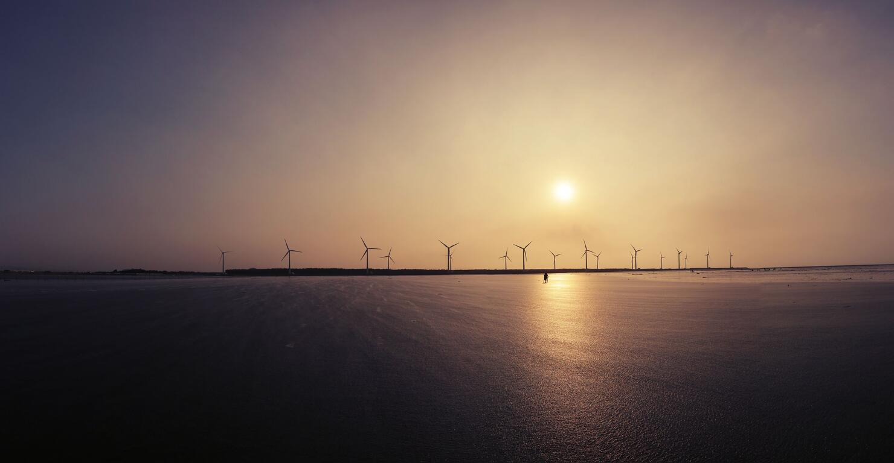
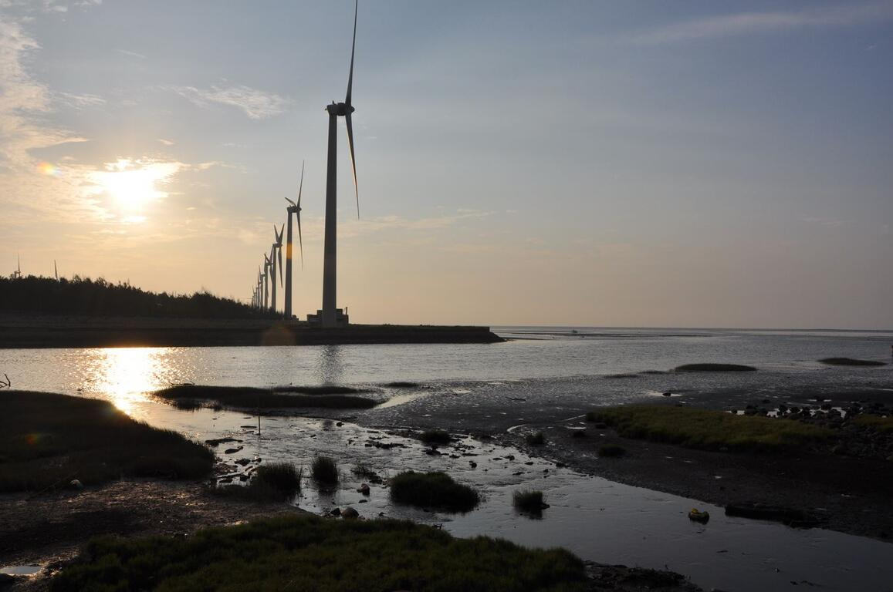
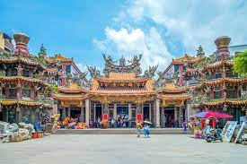
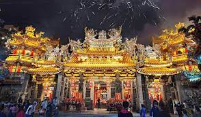

高美濕地（高美野生動物保護區）
高美濕地（高美野生動物保護區）的前身為高美海水浴場，隨著臺中港的啟用，
高美海水浴場泥沙日漸淤積，導致遊客漸漸稀少，在不得已的情況下，只好宣告關閉，卻也因為泥沙的堆積，造就了今天生態豐富的高美濕地。
高美濕地雖然面積不大，但是由於泥質及沙質灘地兼具，加上與河口沼澤地帶鑲嵌在一起，所以孕育了豐富又複雜的濕地生態，
以及目前所知全臺灣最大族群的雲林莞草區，形成乾濕相間伴有植物生長的複雜地形，因為地形多變，生態種類亦相當複雜，主要種類為鳥類、魚類、蟹類及其他無脊椎類等生物；
每年秋冬之際，都會有大批的候鳥前往作客，不管是短暫的休息，或是駐足過冬，都為高美濕地增添了不同的生態風貌，更成為賞鳥人士的新據點。
開放時間：全日開放
地 址：臺中市清水區美堤街8號
服務專線：+886-4-26111566


高美濕地（高美野生動物保護區）
大甲鎮瀾宮
大甲區鎮瀾宮為全臺最知名的媽祖廟之一，已有二百多年歷史，全年香火鼎盛、信徒絡繹不絕，加上每年農曆三月舉辦的遶境出巡，
已是世界級的宗教盛事，吸引國內外遊客前來參與，是大甲最具代表性的景點，鎮瀾宮的紫羅蘭翡翠媽祖和地下一樓媽祖文化館中的黃金媽祖更是鎮殿之寶，
現在媽祖更被列為臺中三寶之一，成為臺中旅遊的必遊景點。大甲區鎮瀾宮建築有前殿、後殿、南北殿、南北室、鐘鼓樓等，都佈滿了人物、花鳥、
走獸等石刻木雕，精雕細琢，色彩絢麗。內正殿供奉媽祖，南殿供有貞節媽祖。廟前龍柱為精細渾厚的石刻鏤雕，屋頂佈滿五顏六色的人物、花鳥、走獸剪黏，檐下大片雕飾按金，正殿神龕周遭更是富麗，
層層疊飾，金碧輝煌，散發出華麗不俗的莊嚴氣象，只可惜因翻修多次，古蹟、古物多已不復存在，只有幾塊乾隆及光緒兩皇帝所題的匾額較具歷史價值。
開放時間：全日開放
地 址：臺中市大甲區順天路158號
服務專線：+886-4-26763522/li>


大甲鎮瀾宮